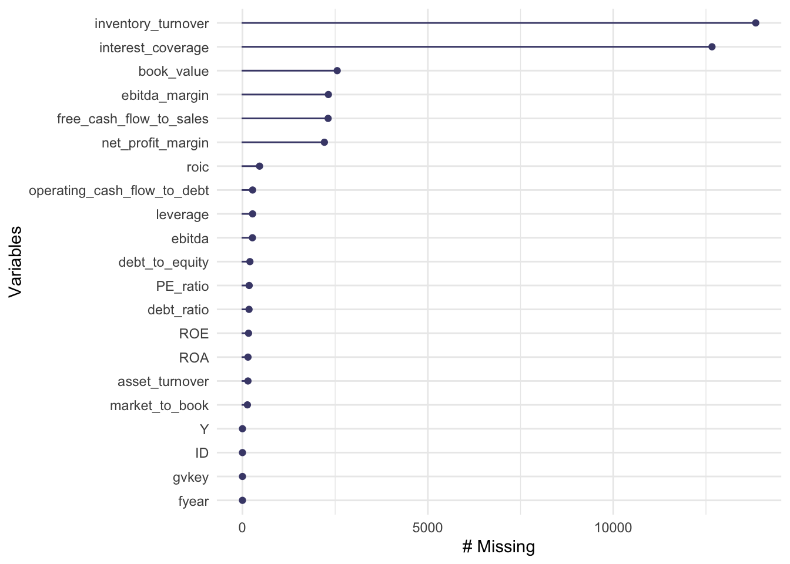
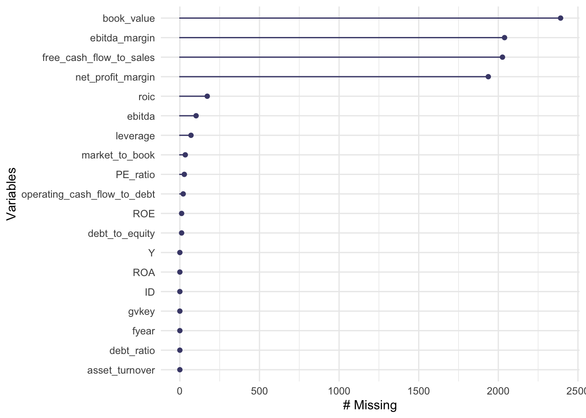
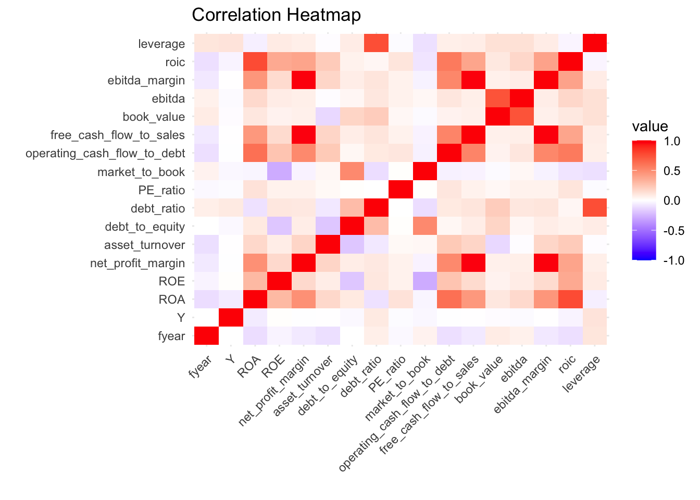
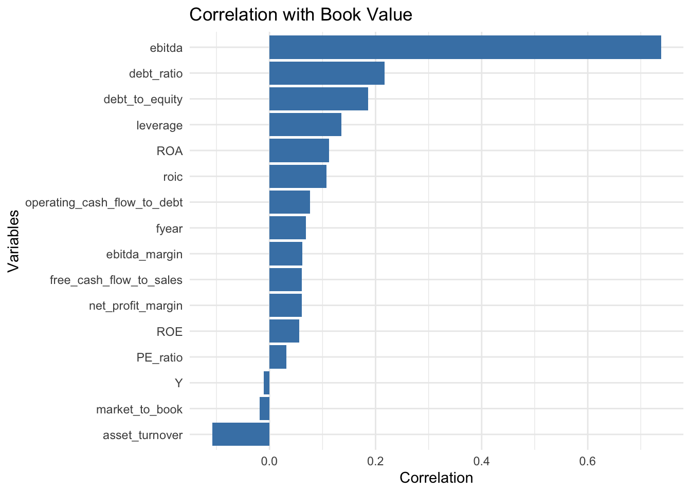
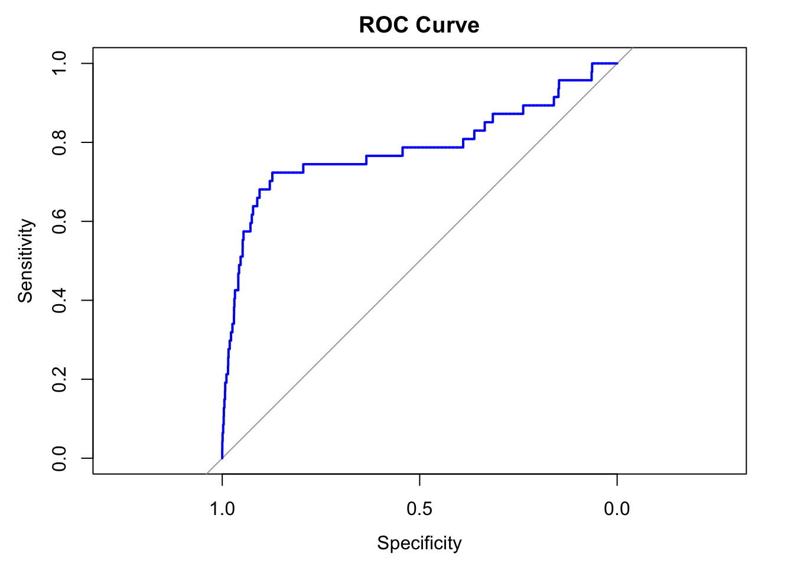
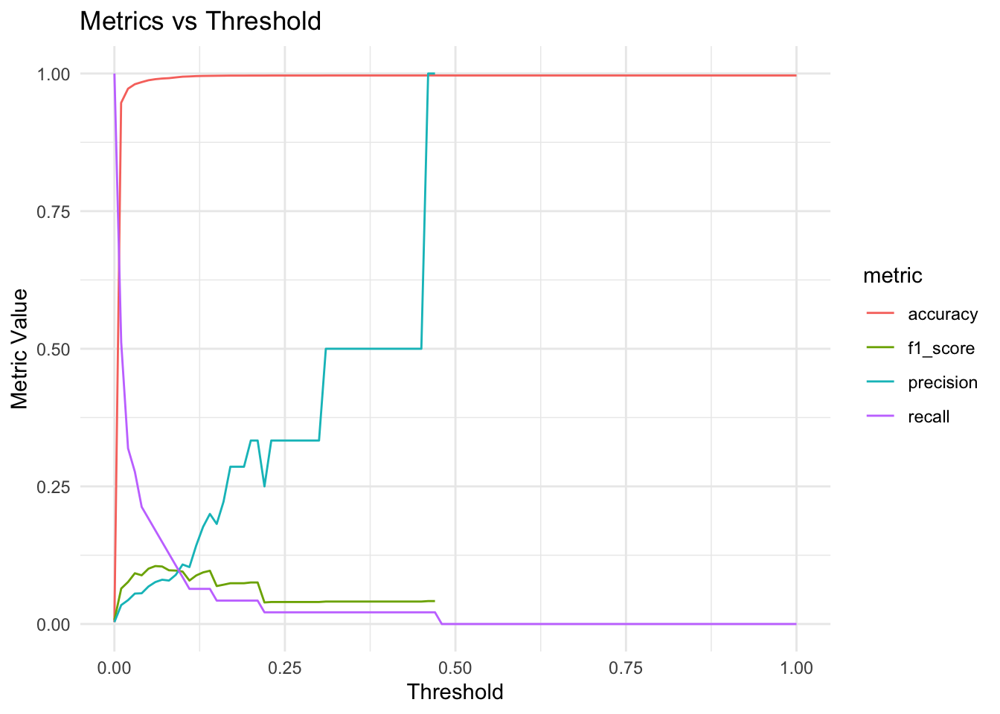

Attaching package: 'mice'
The following object is masked from 'package:stats':
filter
The following objects are masked from 'package:base':
cbind, rbind
library(tidyr)library(ggplot2)library(reshape2)
Attaching package: 'reshape2'
The following object is masked from 'package:tidyr':
smiths
Type 'citation("pROC")' for a citation.
Attaching package: 'pROC'
The following objects are masked from 'package:stats':
cov, smooth, var
Data Manipulation
Data Importation
setwd("/Users/theodruilhe/Documents/M2_D3S/scoring_project")# Import Xfile_path <-file.path("data", "our_data", "X.rds")if (file.exists(file_path)) { X <-readRDS(file_path)} else {print("File not found. Please check the file path.")}# import target_Yfile_path <-file.path("data", "our_data", "target_Y.rds")if (file.exists(file_path)) { y <-readRDS(file_path)} else {print("File not found. Please check the file path.")}
Create an new ID for the join
X <- X %>%mutate(ID =paste(gvkey, fyear, sep ="_"))y <- y %>%mutate(ID =paste(gvkey, fyear, sep ="_"))
Data Quality check
Function to calculate the number of duplicates
count_duplicates <-function(data) {# Total number of rows in the dataset number_of_rows <-nrow(data)# Number of distinct IDs distinct_count <- data %>%ungroup() %>%summarise(total_distinct_IDs =n_distinct(ID)) %>%pull(total_distinct_IDs) # Extract the numeric value# Calculate and return the number of duplicates number_of_duplicates <- number_of_rows - distinct_countreturn(number_of_duplicates)}
For the duplicates rows the values of the columns are the same but not for not for the “PE_ratio” and “market_to_book” thus we will investigate the computation this columns.
We choose to keep only the smallest value for theses variables in case of duplicates
X <- X %>%group_by(ID) %>%# Group by ID to handle duplicatesarrange(PE_ratio, market_to_book) %>%# Sort by smallest PE_ratio and market_to_bookslice(1) %>%# Keep only the first row (smallest values)ungroup() # Remove grouping
# Get the distinct IDs from duplicates_ydistinct_ids <- duplicates_y %>%distinct(ID) %>%pull(ID) # Extract as a vector# View the distinct IDsprint(distinct_ids)
We adopt Shumway’s approach to handle extreme values, ensuring the data remains robust and well-distributed. Specifically:
Values exceeding the 99th percentile of each variable are capped at the 99th percentile value.
Values falling below the 1st percentile of each variable are floored at the 1st percentile value.
This technique effectively minimizes the impact of outliers while preserving the integrity of the dataset.
# Function to truncate values at 1st and 99th percentilestruncate_outliers <-function(column) { p1 <-quantile(column, 0.01, na.rm =TRUE) # 1st percentile p99 <-quantile(column, 0.99, na.rm =TRUE) # 99th percentile column <-ifelse(column < p1, p1, column) # Floor at 1st percentile column <-ifelse(column > p99, p99, column) # Cap at 99th percentilereturn(column)}# Apply truncation to all numeric columns except Ydata <- data %>%mutate(across(where(is.numeric) &!all_of("Y"), truncate_outliers))
# Check for missing values and give the proportion of missing values by columnmissing_values <- data %>%summarise(across(everything(), ~sum(is.na(.)) /n())) %>%gather() %>%arrange(desc(value))# Print missing valuesprint(missing_values)
gg_miss_var(data) # Plot missing values by variable

We identified three groups of variables based on their proportion of missing values:
High Missingness (>30%):
Variables: inventory_turnover and interest_coverage.
Action: These variables have over 30% missing values and will be removed from the dataset due to their unreliability.
Moderate Missingness (~5%):
Variables: book_value, ebitda_margin, free_cash_flow_to_sales, and net_profit_margin.
Action: These variables will be handled individually on a case-by-case basis to ensure the most appropriate imputation or processing.
Low Missingness (<1%):
Variables: Remaining variables with less than 1% missingness.
Action: Mean imputation will be applied to fill the missing values for these variables, ensuring minimal impact on the dataset’s integrity.
1. High missingness
data <- data %>%select(-inventory_turnover, -interest_coverage)
Distribution of missing values
We want to know in which case we are based on these kind of distributions:
a. Univariate Missing Values: If the same individuals have missing values for the same (d < p) variables.
b. Monotonic Missing Values: If the variables can be ordered so that, when the observation (y_{ij}) is missing for the variable (Y_j), then all the following variables for the same individual, (y_{ik}, k > j), are also missing.
c. Non-Monotonic or Arbitrary Missing Values: If the missing values are without structure, i.e., they are distributed without particular structure in the dataset.
# Créer un dataset avec les lignes ayant au moins une valeur manquanterows_with_na <- data %>%filter(if_any(everything(), is.na))# Afficher le nouveau datasetprint(rows_with_na)
# Compter le nombre distinct de colonnes avec des valeurs manquantes par gvkeymissing_values_per_gvkey <- data %>%group_by(gvkey) %>%summarise(distinct_missing_columns =sum(sapply(across(everything(), is.na), any)) )
missing_distribution <- missing_values_per_gvkey %>%group_by(distinct_missing_columns) %>%# Grouper par nombre de colonnes avec NAsummarise(count_gvkey =n() # Compter le nombre de gvkey pour chaque groupe ) %>%arrange(distinct_missing_columns) # Trier par nombre de colonnes avec NA# Afficher les résultatsprint(missing_distribution)
For the company where the number of distinct columns with missing values is greater than 5 we will delete them
# Supprimer les gvkey avec au moins 5 distinct_missing_columnsdata <- data %>%left_join(missing_values_per_gvkey, by ="gvkey") %>%# Joindre avec les informations des colonnes manquantesfilter(distinct_missing_columns <5|is.na(distinct_missing_columns)) %>%# Garder les gvkey avec moins de 5 colonnes manquantesselect(-distinct_missing_columns) # Optionnel : Supprimer la colonne supplémentaire si elle n'est plus nécessaire# Afficher le dataset filtréprint(data)
# Check for missing values and give the proportion of missing values by columnmissing_values <- data %>%summarise(across(everything(), ~sum(is.na(.)) /n())) %>%gather() %>%arrange(desc(value))# Print missing valuesprint(missing_values)
gg_miss_var(data) # Plot missing values by variable

2. Moderate Missingness
summary(data$book_value)
Min. 1st Qu. Median Mean 3rd Qu. Max. NA's
-13.32 53.61 456.88 3949.04 2228.48 93472.65 2391
Feature correlation analysis to asses the relevance of imputation
numeric_data <- data %>%select(where(is.numeric))correlations <- numeric_data %>%summarise(across(everything(), ~cor(.x, numeric_data$book_value, use ="complete.obs")))correlation_df <-tibble(variable =colnames(numeric_data), correlation =as.numeric(correlations))
Heatmap
correlation_matrix <-cor(numeric_data, use ="complete.obs")# Transformer la matrice en un format long pour ggplotmelted_correlation <-melt(correlation_matrix)# Heatmap des corrélationsggplot(melted_correlation, aes(x = Var1, y = Var2, fill = value)) +geom_tile() +scale_fill_gradient2(low ="blue", high ="red", mid ="white", midpoint =0, limit =c(-1, 1)) +theme_minimal() +labs(title ="Correlation Heatmap", x ="", y ="") +theme(axis.text.x =element_text(angle =45, hjust =1))

correlation_with_book_value <- correlation_df %>%filter(variable !="book_value") # Exclure la corrélation avec elle-mêmeggplot(correlation_with_book_value, aes(x =reorder(variable, correlation), y = correlation)) +geom_bar(stat ="identity", fill ="steelblue") +coord_flip() +theme_minimal() +labs(title ="Correlation with Book Value", x ="Variables", y ="Correlation")

We can see that ebitda and book value are higly correlated, we can think of use ebitda to impute missing values in book_value
# Filtrer les lignes où book_value est NArows_with_na_book_value <- data %>%filter(is.na(book_value))# Afficher le dataset résultantprint(rows_with_na_book_value)
Min. 1st Qu. Median Mean 3rd Qu. Max. NA's
-70.8481 -0.0439 0.0484 -1.3788 0.1446 0.6484 2026
Here we affect the value of the median for all Na
summary(data$ebitda_margin)
Min. 1st Qu. Median Mean 3rd Qu. Max. NA's
-82.5545 0.0281 0.1286 -1.5030 0.2732 0.6737 2039
summary(data$net_profit_margin)
Min. 1st Qu. Median Mean 3rd Qu. Max. NA's
-88.4300 -0.0645 0.0403 -1.7761 0.1177 0.5200 1937
Imputation
MICE with Predictive Mean Matching (PMM) is a robust method for handling missing data. MICE iteratively imputes missing values by modeling each variable conditionally on others.
PMM predicts missing values using regression and replaces them with observed values closest to the prediction, ensuring realistic imputations that respect the original data distribution.
With m = 5, multiple datasets are generated to account for imputation uncertainty, and seed = 123 ensures reproducibility. This approach reduces bias, preserves variability, and produces reliable analyses by addressing missing data effectively.
# Calculer les gvkey ayant au moins une fois Y = 1gvkey_with_Y1 <- data %>%group_by(gvkey) %>%# Grouper par gvkeysummarise(has_Y1 =any(Y ==1)) %>%# Vérifier si Y = 1 existe pour chaque gvkeysummarise(proportion_Y1 =mean(has_Y1)) # Calculer la proportion# Afficher la proportionprint(gvkey_with_Y1)
# A tibble: 1 × 1
proportion_Y1
<dbl>
1 0.0274
We have almost 3% of company that have bankrupted
Survival analysis (Hazard Model)
Survival Analysis in Bankruptcy Scoring
Survival analysis is a statistical approach to predict the time to an event, such as a company’s bankruptcy. The Cox Proportional Hazards Model is used to evaluate the relationship between financial ratios and the hazard of bankruptcy. This model estimates how variables like profitability (e.g., ROA, ROE), leverage (e.g., debt-to-equity, debt ratio), and efficiency (e.g., asset turnover) impact the likelihood of bankruptcy over time.
In the code, the model is fitted with financial variables as predictors and time-to-bankruptcy as the survival outcome. The results reveal the significant factors influencing the bankruptcy risk.
Create time and status variables
# Prepare survival datadf <- data %>%group_by(gvkey) %>%# Group by firm identifiermutate(time = fyear -min(fyear), # Calculate time-to-eventstatus = Y) %>%# Status (1 = bankruptcy, 0 = no event)ungroup()
Fit the Cox Proportional Hazards Model (all the variables except ones define below with values goes to infinity)
The C-index measures the model’s ability to rank survival times correctly.
# Concordance indexcox_summary <-summary(cox_model)c_index <- cox_summary$concordance[1] # First element of concordance contains the C-indexcat("Concordance Index (C-Index):", c_index, "\n")
Concordance Index (C-Index): 0.8236046
risk scores (linear predictors) to use them for stratification or classification
# Compute risk scoresrisk_scores <-predict(cox_model, type ="risk")# Add risk scores to the datasetdf <- df %>%mutate(risk_score = risk_scores)
If we dichotomize the risk (e.g., high vs. low risk based on the median risk score), you can compute confusion matrices.
# Dichotomize risk scores: high risk (1) vs. low risk (0) based on the medianthreshold <-median(risk_scores)df <- df %>%mutate(predicted_status =ifelse(risk_score > threshold, 1, 0))# Create confusion matrixlibrary(caret)
Loading required package: lattice
Attaching package: 'caret'
The following object is masked from 'package:survival':
cluster
The following object is masked from 'package:purrr':
lift
# Create a formula for the logistic regression# Exclude non-numeric predictors like gvkey, ID, and timepredictors <-names(df)[!names(df) %in%c("gvkey", "fyear", "ID", "Y", "status")]# Construct the formula dynamicallyformula <-as.formula(paste("Y ~", paste(predictors, collapse =" + ")))# Fit the logistic regression modellogistic_model <-glm(formula, data = df, family = binomial)# Summarize the modelsummary(logistic_model)
Net Profit Margin: Positive coefficient (0.074, p < 0.01) suggests higher margins increase bankruptcy likelihood, potentially due to overstated profits.
Leverage: Strong positive effect (2.231, p < 0.001) highlights higher leverage as a key bankruptcy driver.
Non-Significant Predictors: Variables like debt-to-equity, debt ratio, and market-to-book ratio showed no significant effect (p > 0.1).
Model Fit:
Residual deviance decreased substantially (2172.2 to 1815.7), and the AIC is 1849.7, indicating a good fit.
This model identifies leverage and profitability measures as critical indicators of bankruptcy risk, providing actionable insights for financial analysis.
data <- df
Prediction Evaluation
Train-Test split
# Step 2: Train-test splitset.seed(123) # Set seed for reproducibilitytrain_index <-createDataPartition(data$Y, p =0.7, list =FALSE) # 70% training datatrain_data <- data[train_index, ]test_data <- data[-train_index, ]
Train the model
# Step 3: Train the Logistic Regression Model# Exclude non-numeric predictors like gvkey, ID, and timepredictors <-names(data)[!names(data) %in%c("gvkey", "fyear", "ID", "Y", "status")]# Construct the formula dynamicallyformula <-as.formula(paste("Y ~", paste(predictors, collapse =" + ")))# Fit the logistic regression modellogistic_model <-glm(formula, data = data, family = binomial)
Summarize the Model
# Step 4: Summarize the Modelsummary(logistic_model)
# Step 5: Evaluate the Model on Test Data# Predict probabilities for the test settest_data <- test_data %>%mutate(predicted_prob =predict(logistic_model, newdata = ., type ="response"))# Create predictions based on a cutoff (e.g., 0.5)test_data <- test_data %>%mutate(predicted_class =ifelse(predicted_prob >0.3, 1, 0))
Model Evaluation Metrics
# Confusion Matrixconfusion_matrix <-table(Predicted = test_data$predicted_class, Actual = test_data$Y)print("Confusion Matrix:")
# ROC Curve and AUCroc_curve <-roc(test_data$Y, test_data$predicted_prob)
Setting levels: control = 0, case = 1
Setting direction: controls < cases
print(paste("AUC:", round(auc(roc_curve), 4)))
[1] "AUC: 0.7859"
plot(roc_curve, col ="blue", main ="ROC Curve")

auc(roc_curve)
Area under the curve: 0.7859
Cross Validation to choose the threshold
This code performs an analysis to determine the optimal classification threshold for a binary classification model, using cross-validation to evaluate performance across multiple metrics. Here’s a breakdown of the process:
Define Thresholds:
A sequence of thresholds (0 to 1 in steps of 0.01) is defined to evaluate model predictions.
Metrics Calculation:
For each threshold, predicted probabilities (predicted_prob) are converted into binary predictions (predicted_class) based on whether they exceed the threshold.
A confusion matrix is generated for the predictions to calculate key metrics:
Accuracy: Overall correctness.
Precision: Correct positive predictions among all positive predictions.
Recall: Correct positive predictions among all actual positives.
F1 Score: Harmonic mean of precision and recall.
Cross-Validation Results:
The calculated metrics are stored in a dataframe (cv_results) for all thresholds.
Optimal Threshold:
The threshold maximizing a chosen metric (e.g., F1 Score) is identified and printed as the optimal threshold.
Visualization:
Metrics are plotted against thresholds using a line plot, showing how each metric varies with the threshold.
This approach ensures the model’s classification threshold is tuned to balance the trade-offs between precision, recall, and other performance measures, aligning with the specific objectives of the analysis.
# Define a sequence of thresholds to testthresholds <-seq(0, 1, by =0.01)# Initialize a dataframe to store resultscv_results <-data.frame(threshold = thresholds, accuracy =NA, precision =NA, recall =NA, f1_score =NA)# Perform cross-validation for each thresholdfor (i inseq_along(thresholds)) { threshold <- thresholds[i]# Create predictions based on the current threshold test_data <- test_data %>%mutate(predicted_class =ifelse(predicted_prob > threshold, 1, 0))# Confusion Matrix confusion_matrix <-table(Predicted = test_data$predicted_class, Actual = test_data$Y)# Handle cases where the confusion matrix dimensions are insufficient tp <-ifelse("1"%in%rownames(confusion_matrix) &"1"%in%colnames(confusion_matrix), confusion_matrix["1", "1"], 0) fp <-ifelse("1"%in%rownames(confusion_matrix) &"0"%in%colnames(confusion_matrix), confusion_matrix["1", "0"], 0) fn <-ifelse("0"%in%rownames(confusion_matrix) &"1"%in%colnames(confusion_matrix), confusion_matrix["0", "1"], 0) tn <-ifelse("0"%in%rownames(confusion_matrix) &"0"%in%colnames(confusion_matrix), confusion_matrix["0", "0"], 0)# Calculate metrics accuracy <- (tp + tn) /sum(confusion_matrix) precision <-ifelse(tp + fp >0, tp / (tp + fp), NA) recall <-ifelse(tp + fn >0, tp / (tp + fn), NA) f1_score <-ifelse(!is.na(precision) &!is.na(recall) & (precision + recall >0), 2* ((precision * recall) / (precision + recall)), NA)# Store metrics in cv_results cv_results[i, ] <-c(threshold, accuracy, precision, recall, f1_score)}# Find the optimal threshold based on a specific metric (e.g.,recall)optimal_threshold <- cv_results %>%filter(f1_score ==max(f1_score, na.rm =TRUE))print(optimal_threshold)
# Plot metrics against thresholdscv_results_long <- cv_results %>%pivot_longer(cols =c(accuracy, precision, recall, f1_score), names_to ="metric", values_to ="value")ggplot(cv_results_long, aes(x = threshold, y = value, color = metric)) +geom_line() +labs(title ="Metrics vs Threshold", x ="Threshold", y ="Metric Value") +theme_minimal()
Warning: Removed 106 rows containing missing values or values outside the scale range
(`geom_line()`).

# Extract the optimal thresholdoptimal_threshold_value <- optimal_threshold$threshold[1]# Create predictions based on the optimal thresholdtest_data <- test_data %>%mutate(predicted_class =ifelse(predicted_prob > optimal_threshold_value, 1, 0))# Generate the confusion matrixconfusion_matrix_optimal <-table(Predicted = test_data$predicted_class, Actual = test_data$Y)# Print the confusion matrixprint("Confusion Matrix at Optimal Threshold:")
[1] "Confusion Matrix at Optimal Threshold:"
print(confusion_matrix_optimal)
Actual
Predicted 0 1
0 13031 39
1 97 8
Time Series Cross-Validation
This code implements a Time Series Cross-Validation (Walk Forward Scheme) to evaluate the performance of a logistic regression model for predicting a bankruptcy. The process respects the temporal structure of the data to avoid data leakage by ensuring that future observations are not used for training.
Steps:
Prepare and Sort Data:
The dataset is ordered by firm identifier (gvkey) and year (fyear) to preserve the chronological order.
Define Cross-Validation Splits:
A custom function creates training and testing indices for a walk-forward validation approach, splitting the data into 5 folds.
Model Training and Testing:
For each fold:
The model is trained on past data and tested on future data within the defined fold.
Logistic regression is used with financial variables as predictors.
Performance Evaluation:
Predictions are evaluated using metrics like accuracy and Area Under the ROC Curve (AUC) to measure classification performance.
Confusion matrices and ROC curves provide additional insights into the model’s predictive ability.
This approach ensures robust and time-consistent model validation, simulating real-world scenarios where only past data is available to predict future outcomes.
# Step 1: Prepare data# Step 2: Sort data by firm (gvkey) and year (fyear) to respect temporal structuredata <- data %>%arrange(gvkey, fyear)# Step 3: Define Time Series Cross-Validation (Walk Forward Scheme)# Create custom indices for training and testingtime_series_cv <-function(data, n_splits) { indices <-list() n <-nrow(data) split_size <-floor(n / (n_splits +1)) # Calculate split sizefor (i in1:n_splits) { train_end <- split_size * i # End index for training test_start <- train_end +1 test_end <- test_start + split_size -1if (test_end > n) break# Ensure test indices stay within range train_indices <-seq(1, train_end) test_indices <-seq(test_start, test_end) indices[[i]] <-list(train = train_indices, test = test_indices) } indices}
# Create 5 splits for time series CVn_splits <-5cv_indices <-time_series_cv(data, n_splits)
# Step 4: Perform Walk Forward Validationresults <-list()for (i inseq_along(cv_indices)) {# Get train and test data train_data <- data[cv_indices[[i]]$train, ] test_data <- data[cv_indices[[i]]$test, ]# Fit logistic regression model on training data logistic_model <-glm( Y ~ ROA + ROE + net_profit_margin + asset_turnover + debt_to_equity + debt_ratio + PE_ratio + market_to_book + operating_cash_flow_to_debt + free_cash_flow_to_sales + ebitda_margin + roic + leverage, family =binomial(link ="logit"),data = train_data )# Predict probabilities on test data test_data <- test_data %>%mutate(predicted_prob =predict(logistic_model, newdata = ., type ="response"),predicted_class =ifelse(predicted_prob >0.5, 1, 0))# Evaluate model performance confusion_matrix <-table(test_data$predicted_class, test_data$Y) accuracy <-sum(diag(confusion_matrix)) /sum(confusion_matrix) roc_curve <-roc(test_data$Y, test_data$predicted_prob) auc <-auc(roc_curve)# Store results results[[i]] <-list(fold = i,accuracy = accuracy,auc = auc,confusion_matrix = confusion_matrix,roc_curve = roc_curve )}
The model achieved an average accuracy of 99.57%, indicating that it correctly classified nearly all observations in the test sets. However, the average AUC of 0.7879 suggests moderate discriminatory power, meaning the model performs reasonably well in distinguishing between the two classes but leaves room for improvement.
This discrepancy between accuracy and AUC highlights that while the model predicts the majority class well, it might struggle with imbalanced data or correctly classifying the minority class.
# Plot the last ROC curve as an exampleplot(results[[n_splits]]$roc_curve, col ="blue", main ="ROC Curve for Last Fold")